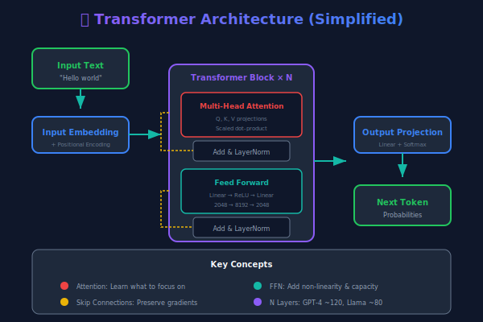

Layer: Group of neurons processing at the same stage
"Deep": Many hidden layers (GPT-4 has ~120 layers)
Why Deep Learning Dominates
📊 Data
Internet generated massive training datasets
Common Crawl: 250B+ pages
⚡ Compute
GPUs made parallel processing affordable
NVIDIA H100: 4 petaflops
🧪 Algorithms
Transformers (2017) revolutionized architecture
Attention Is All You Need
The convergence of all three — around 2017 — unlocked the current AI revolution.
Section 4
Large Language Models (LLMs)
What Is a Large Language Model?
An LLM is a neural network trained on massive text data to predict the next token in a sequence.
Key Properties
Large: Billions of parameters (GPT-4: ~1.8T estimated)
Language: Trained primarily on text
Model: Statistical model of language patterns
What They Learn
Grammar and syntax
Facts and relationships
Reasoning patterns
Code structure
Next-Token Prediction
The cat sat on the ___
Token
Probability
mat
34%
floor
22%
roof
11%
table
8%
... thousands more
25%
The model picks one token, appends it, then predicts the next one. Repeat.
The Transformer Architecture

Key Innovation: Self-Attention — allows the model to weigh which parts of the input matter most for each output token. "Attention Is All You Need" (Vaswani et al., 2017)
AI You Already Use Every Day
📧 Gmail
Smart Compose, spam filtering, priority inbox
~1.8B users
🎬 Netflix
Recommendation engine drives 80% of content watched
Saves $1B/year in retention
🗣️ Siri / Alexa
Speech recognition, NLU, intent classification
500M+ Siri users
🗺️ Google Maps
Traffic prediction, route optimization, ETA
📸 iPhone Photos
Face recognition, scene detection, search
💳 Your Bank
Real-time fraud detection on every transaction
Section 5
A Brief History of AI
AI Timeline: 75 Years in 60 Seconds
Year
Milestone
Significance
1950
Turing Test proposed
First formal definition of machine intelligence
1956
Dartmouth Conference
"Artificial Intelligence" coined as a field
1966
ELIZA chatbot
First conversational AI (pattern matching)
1997
Deep Blue beats Kasparov
AI conquers chess (brute force, not learning)
2012
AlexNet wins ImageNet
Deep learning revolution begins
2017
"Attention Is All You Need"
Transformer architecture invented at Google
2020
GPT-3 released
175B parameters — first "wow" moment for text AI
2022
ChatGPT launches
100M users in 2 months — fastest adoption ever
2024
GPT-4o, Claude 3, Gemini
Multimodal models go mainstream
2025
AI agents emerge
Models that can use tools and take actions
AI Winters: Hype Cycles Are Real
First AI Winter (1974–1980)
Perceptrons couldn't solve XOR problem
Government funding cut dramatically
Promises far exceeded capabilities
Second AI Winter (1987–1993)
Expert systems were brittle and expensive
LISP machine market collapsed
Japan's 5th Gen Computer project failed
Lesson for enterprises: Adopt AI for real problems with measurable ROI — not because of hype.
Myth vs. Reality
🚫 Myth
"AI is sentient and understands what it's saying."
✅ Reality
LLMs are statistical pattern matchers. They predict likely text — they don't understand meaning, have beliefs, or experience consciousness.
🚫 Myth
"AI is always accurate and factual."
✅ Reality
LLMs hallucinate confidently. A 2025 Stanford study found GPT-4 fabricated legal citations in 6% of responses. Always verify critical outputs.
Myth vs. Reality (Continued)
🚫 Myth
"AI will replace all jobs."
✅ Reality
AI automates tasks, not jobs. Goldman Sachs estimates 300M jobs will be affected, but most will be augmented, not eliminated. Radiologists now use AI to be faster, not to be replaced.
🚫 Myth
"More data always means better AI."
✅ Reality
Data quality matters more than quantity. Garbage in, garbage out. IBM found that poor data quality costs US businesses $3.1 trillion per year.
Section 6
Current Capabilities & Limitations
What AI Does Well (2025)
Strong Capabilities
✅ Text generation, summarization, translation
✅ Code generation and debugging
✅ Image recognition and generation
✅ Pattern detection in large datasets
✅ Conversational interfaces
✅ Document analysis and extraction
Known Limitations
❌ Reliable factual accuracy (hallucinations)
❌ Mathematical reasoning (improving but fragile)
❌ Real-time information (without tools)
❌ Causal reasoning and common sense
❌ Long-term planning and goal pursuit
❌ Explaining its own reasoning reliably
Enterprise AI in Action
Industry
Use Case
Company
Impact
Finance
Fraud detection
Mastercard
Reduced false positives by 50%
Healthcare
Drug discovery
Insilico Medicine
Candidate to trial in 18 months (vs 4.5 years)
Legal
Contract review
Kira Systems
90% faster due diligence
Security
Threat detection
Darktrace
Autonomous response in <2 seconds
Retail
Demand forecasting
Walmart
Reduced food waste by 20%
🎯 Hands-On: "Spot the AI"
Activity (10 minutes)
List 5 apps/services you used today (email, maps, music, shopping, etc.)
For each, identify:
Does it use AI? (Yes / No / Probably)
What type? (Supervised, Unsupervised, or RL)
What task does the AI perform?
Share with your neighbor — did they catch any you missed?
Group discussion: Which AI did you not realize was AI?
Code: Your First AI Classification
from sklearn.datasets import load_iris
from sklearn.model_selection import train_test_split
from sklearn.ensemble import RandomForestClassifier
from sklearn.metrics import accuracy_score
# Load a classic ML dataset
data = load_iris()
X_train, X_test, y_train, y_test = train_test_split(
data.data, data.target, test_size=0.2, random_state=42
)
# Train a supervised learning model
model = RandomForestClassifier(n_estimators=100, random_state=42)
model.fit(X_train, y_train)
# Predict and evaluate
predictions = model.predict(X_test)
accuracy = accuracy_score(y_test, predictions)
print(f"Model accuracy: {accuracy:.1%}") # ~96.7%
# This is supervised learning:
# - Labeled data (iris species)
# - Classification task
# - Learns from examples, generalizes to new data
🧠 Knowledge Check
What is the difference between AI, ML, and Deep Learning?
Netflix's recommendation engine is an example of which type of ML?
Supervised Learning
Unsupervised Learning
Reinforcement Learning
All of the above
True or False: LLMs understand the meaning of the text they generate.
Name two reasons the "AI winter" periods occurred.